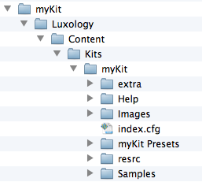
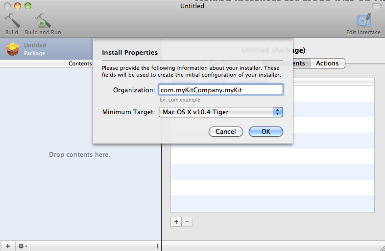
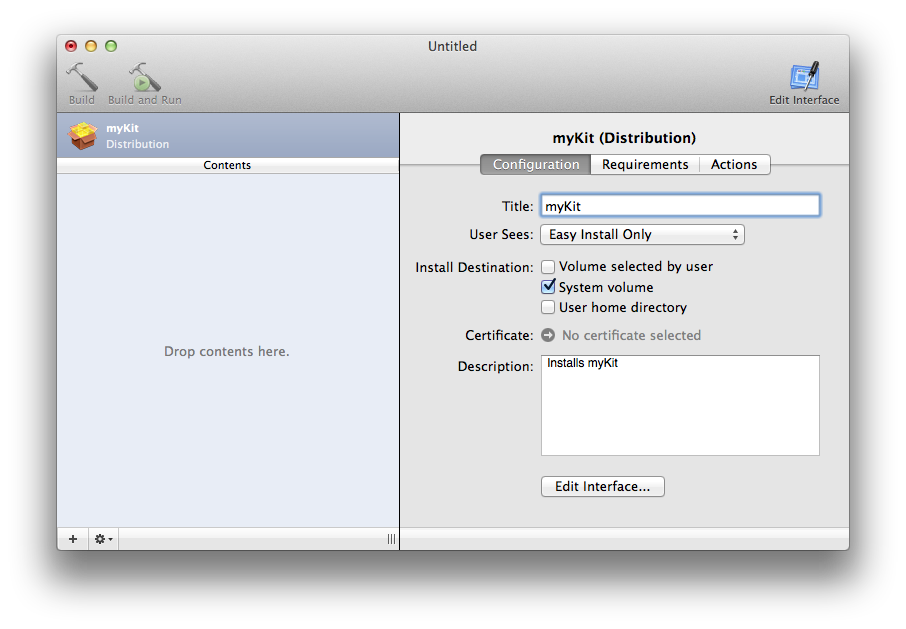
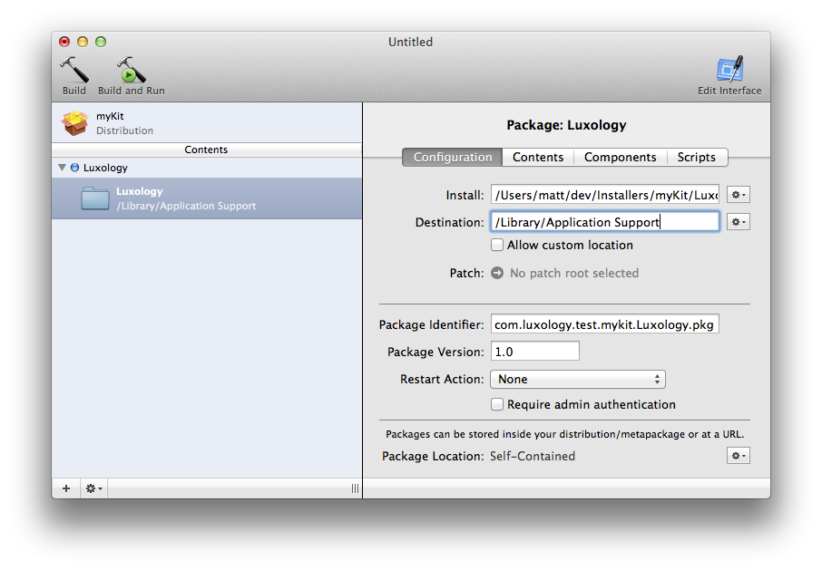
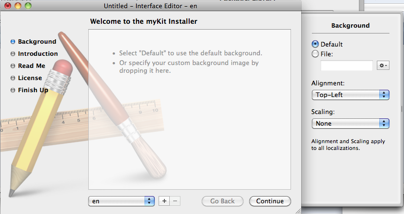
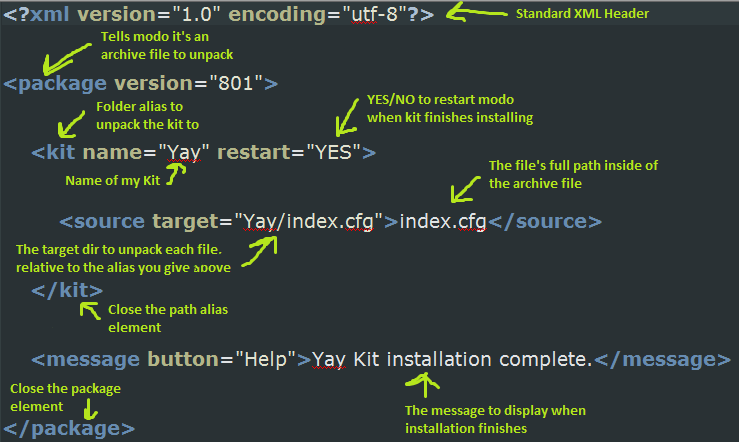
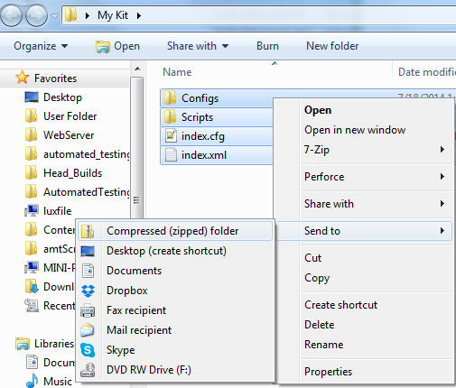

Kits¶
Introduction¶
A kit in modo 501 and later versions is a collection of configs, resource images, scripts, plug-ins and content that add a specific set of features to modo. Ideally this is a unified feature set that a user would want to install or uninstall as a unit.
modo finds kits when it searches for configs on startup, and any such directory can contain kits. This includes user:Configs, content:Kits and the main resource directory.
Defining a Kit¶
A kit is a sub-directory containing a file called index.cfg. This is a normal config file but with a slightly different preamble containing the name of the kit.
1 2 3 4 | <?xml version="1.0" encoding="UTF-8"?>
<configuration kit="kitName">
[...]
</configuration>
|
The kit name is an internal name (alphanumeric and underscore only, starting with a letter), and must be globally unique. A alias is automatically created for refering to the kit directory, and is called kit_name.
A version can be associated with a kit by adding a version string with the kit directive:
1 | <configuration kit="kitName" version="1.0">
|
Specific kits can be included or excluded on specific system types. For example, this kit only loads on the PC.
1 2 3 4 | <?xml version="1.0" encoding="UTF-8"?>
<configuration kit="kitName" and="nt">
[...]
</configuration>
|
This one will load in 32-bit modo and on any Mac.
1 2 3 4 | <?xml version="1.0" encoding="UTF-8"?>
<configuration kit="kitName" and="app32" or="mac">
[...]
</configuration>
|
The boolean operators are ungrouped and are simply applied in order. Forms like !x86 can also be used for a negative test. The supported keys are:
app32 – 32-bit application on any platform
app64 – 64-bit application on any platform
unix – Linux platform
‘’’osx, mac’’’ – Macintosh platform
‘’’win, nt’’’ – Windows platform
x86 – 32-bit Windows
x64 – 64-bit Windows
1 | query platformservice appversion ?
|
You can then set your kit to only load in this release, releases before this, or later releases. This kit will only load in in a version late enough to have a required bug fix. (The xml-safe characters “[” and “]” stand in for the less-than and greater-than operators. “=” also works.)
1 2 3 4 | <?xml version="1.0" encoding="UTF-8"?>
<configuration kit="kitName" and="ver]40345">
[...]
</configuration>
|
1 2 3 4 | <?xml version="1.0" encoding="UTF-8"?>
<configuration kit="kitName" and="rel=501">
[...]
</configuration>
|
modo kits can also key off of the identifying word “major”, so that a kit will load for all releases in a major series. For example, this kit would load in modo 10.0, 10.1, and 10.2. Note: since major will not be recognized in versions prior to 10.0, and=”rel]1000” should be added to make sure that the kit does not run in 90x or earlier.
1 2 3 4 | <?xml version="1.0" encoding="UTF-8"?>
<configuration kit="kitName" and="rel]1000" and="major=10">
[...]
</configuration>
|
Referencing Other Files¶
Resources¶
The index.cfg file is the only config file read by default. It can contain all the resources for the kit, or it can import other resources by placing them in a sub-directory of the kit and referencing that with an import directive in the index config.
1 2 3 4 5 6 7 | <?xml version="1.0" encoding="UTF-8"?>
<configuration kit="kitName">
<import>resrc</import>
[...]
</configuration>
|
Alternately, the index can import specific resource files.
1 2 3 4 5 6 7 8 | <?xml version="1.0" encoding="UTF-8"?>
<configuration kit="kitName">
<import>icons.cfg</import>
<import>forms.cfg</import>
[...]
</configuration>
|
An alias with kit_’’kitName’’’:’ format is the alias for the kit’s folder.
1 2 3 4 5 6 7 8 9 10 11 12 13 14 15 16 17 18 19 20 21 22 23 24 25 26 27 28 | <?xml version="1.0" encoding="UTF-8"?>
<configuration kit="kitName">
<import>kit_kitName:</import>
[...]
</configuration>
</source>
The ':' tells modo that the string precedding it should be treated as an alias so '<import>kit_kitName:</import>' is basically importing the root folder of the kit.
==== Plug-ins ====
The kit can also contain plug-ins, which can be found by putting them into a subdirectory and adding auto-scan directives for 32 and/or 64 bits of that directory. If there are no platform dependencies, you can have your plug-ins stored in the ''extra'' subdirectory.
<source lang="xml">
<?xml version="1.0" encoding="UTF-8"?>
<configuration kit="kitName">
<atom type="Extensions32">
<list type="AutoScan">extra</list>
</atom>
<atom type="Extensions64">
<list type="AutoScan">extra</list>
</atom>
[...]
</configuration>
|
If you have different versions for different platforms, for example, if the kit contains both Windows plug-ins – which are compiled separately for 32 and 64 bit – and Mac fat binaries containing code for both architectures, and Linux, they can be referenced this way:
1 2 3 4 5 6 7 8 9 10 11 12 13 14 15 | <?xml version="1.0" encoding="UTF-8"?>
<configuration kit="kitName">
<atom type="Extensions32">
<list type="AutoScan">win32</list>
<list type="AutoScan">mac</list>
</atom>
<atom type="Extensions64">
<list type="AutoScan">win64</list>
<list type="AutoScan">mac</list>
<list type="AutoScan">unix</list>
</atom>
[...]
</configuration>
|
The Linux & mac plug-ins will be ignored on Windows and vice-versa.
Scripts¶
Scripts can also be referenced from kits. This is done by defining an alias to the script. If the script is in the root of the kit’s directory, nothing beyond the script’s name is needed.
1 2 3 4 | <atom type="ScriptSystem">
<hash type="ScriptAlias" key="myScript">doit.pl"</hash>
<hash type="ScriptAlias" key="myScript2">dir/doi2t.pl"</hash>
</atom>
|
Once defined, the script alias can be used in place of the path to the script. For example, “@myScript” will execute the above script at “doit.pl”, automatically taking into account the alias and the kit’s location (or more specifically, the location of the config that the alias is defined in). This will work if the script is called directly by the user (say, from a key mapping they created) or if it is called from within the kit itself.
It is recommended that all scripts used within kits use script aliases to ensure that attempts by the user to map the script to a key will work correctly. An alternative is to execute the script more directly through the kit’s path alias, but the script alias is cleaner.
Images¶
Image resources can also be accessed with relative paths. The image name for an image resource can be relative to the directory that contains the config file making the resource declaration. This fragment defines an icon that could be used for an item type. The key for the image resource has to be globally unique.
1 2 3 4 5 6 7 8 9 10 | <atom type="UIElements">
<hash type="image" key="testKit_icons">icon.tga</hash>
<hash type="Icon" key="item.val.test.texture">
<atom type="Source">testKit_icons</atom>
<atom type="Location">0 0 13 13</atom>
</hash>
</atom>
|
Preset Items¶
Users can also import a kit directory to modo’s preset browser through the kit config file. This allows preset items contained within the kit to appear within modo’s preset browser without the need to manually add the directory. Each identified directory should be followed with a sequential index number. This fragment will add the folders “MyMaterials” and “MyMeshes” contained in the testKit root folder to modo’s preset browser.
1 2 3 4 | <atom type="DirBrowser">
<hash type="ClientPath" key="presetChoice@kit_testKit:MyMaterials">1</hash>
<hash type="ClientPath" key="presetChoice@kit_testKit:MyMeshes">2</hash>
</atom>
|
Installing a Kit¶
Making Installers for modo Kits on OS X¶
modo Kits installers are created using PackageMaker, which is installed with the Apple Developer Tools. It can be found at:
1 | /Developer/Applications/Utilities/PackageMaker.app
|
In the case of Kits, all we need to do to install the Kit is copy it into the content directory (at root level)
1 | /Library/Application Support/Luxology/Content/Kits
|
and that’s it. Note that PackageMaker will create any or all of this path as needed and will not affect any currently existing folders (it’s non-destructive).
Preparation¶
We’ll start by setting up a project folder.Create a folder (anywhere) called MyKitInstaller. This will be our working folder where we build the installer.
Within MyKitInstaller, create the empty folder hierarchy that is where the Kit should be placed in content directory as explained above.In this case, it would be
1 | /Library/Application Support/Luxology/Content/Kits/myKit
|
Now put your Kit files in myKit (your index.cfg and all other folders & files that make up your Kit).
Now it’s time to make the installer itself.
Step 1: Setup and OS Version¶
Launch PackageMaker.You will be greeted with an initial window that looks like the following. You should enter in a suitable value for field using reverse-domain notation. Then select what the oldest version of Mac OS X you want your installer to be able to run on.
Step 2: Setting Requirements¶
Now we’ll set the Requirements for our installer. From the default initial project you’ll only need to set the name and change the Install Destination fields. The important one is Install Destination - we want it to be ‘’’System volume.’’’ Basically, our installer is going to contain a mirror of the final path to our installer and non-destructively extract that into /Library/Application Support/. That’s all we’re going to need to do for this top level setting.It should now look something like this:
Step 3: Payload and Configuration¶
Now we’ll add our payload. Drag and Drop the Luxology folder you set up (the one containing kit) onto the Contents area. PackageMaker should look like this:
The first thing we need to do is make a change to the Configuration tab so switch to it and make sure “Require admin authentication” is off. Now we’ll switch to the Contents tab and make sure the “Include root in package” option is selected. It’s a good idea to also click on the “Apply Recommendations” button to fix any ownership problems with your payload.
At this point, you should have a functional installer. Save it into your myKitInstaller dir (or wherever). Now clicking Build will actually generate the installer itself (Build and Run of course does just that).
Step 5: Installer Interface¶
The last thing you probably want to do is edit the interface the user sees. Clicking on the Edit Interface button brings up a window allowing you to add Read Me, License, background art and a message. You can load a text file or simply type in the message. The interface is very straightforward the actual steps for doing these tasks will not be covered but it looks like this:
Making Installers for modo Kits on Windows¶
modo Kits installers are created using the free and open source NSIS. It can be found at:
[http://nsis.sourceforge.net/Main_Page NSIS.Sourceforge.Net]
NSIS2 is a text based installer compiler, code highlighting is available for many common text editors including Programmer’s Notepad
Building the Script¶
NSIS scripts are broken down into several sections that are best explained by the NSIS documentation, however this script will get you most of the way, replacing any path references with your own.
This first section sets up the included plugins, in this case we’re using MUI2 (the modern user interface) WinVer (to determine version of windows) LogicLib and x64, keep in mind that commented lines begin with a ;
1 2 3 4 5 6 7 8 9 10 | ;NSIS Luxology Installer V.1
;Kits Installer
;Written by Dion Burgoyne
;--------------------------------
;Include Modern UI
!include "MUI2.nsh"
!include "WinVer.nsh"
!include "LogicLib.nsh"
!include "x64.nsh"
;--------------------------------
|
This second section contains the variable defines that will be referenced later in the script
1 2 3 4 5 6 7 8 9 10 11 12 13 14 | ;Custom Defines
!define BuildSourcePath "PATH TO SOURCE FILE"
!define BuildSourceExtra "PATH TO EXTRA NEEDED FILES"
!define ContentInstallDir "$DOCUMENTS\Luxology\Content\"
!define productName "NAME OF KIT"
!define versionName "1"
!define uninstallDir "$LOCALAPPDATA\Luxology\modo\KIT NAME\"
!define kitsDesc "SHORT DESCRIPTION OF KIT"
!define SetContent $8
!define regKeyInstallDir $9
;--------------------------------
|
Here we define our general script parameters, some of these can be automatically filled in with the generated variables from the first section but here they’re made manually. The branding name referenced below is the small text that will appear in the lower left corner of the installer.
1 2 3 4 5 6 7 8 9 10 11 12 13 14 15 16 | ;General
;Name and file
Name "MY KIT NAME"
OutFile "MY INSTALLERS NAME.exe"
BrandingText "MY BRANDING NAME"
;Default installation folder
InstallDir "$APPDATA\Luxology\Configs\"
;Get installation folder from registry if available
;Request application privileges for Windows Vista
RequestExecutionLevel none
;--------------------------------
|
Here we define the script interface, colors, background images and icons.
1 2 3 4 5 6 7 8 9 10 11 | ;Interface Configuration
!define MUI_HEADERIMAGE
!define MUI_HEADERIMAGE_BITMAP "${BuildSourceExtra}\PATH TO ART\MYIMAGE.BMP" ; optional
!define MUI_ICON "${BuildSourceExtra}\PATH TO ICONS\MyIcon128.ico"
!define MUI_ABORTWARNING
!define MUI_INSTFILESPAGE_COLORS "9db3c2 000000"
;--------------------------------
|
Here are the page definitions… In this case we only have a EULA page and an install page (and its Uninstaller)
1 2 3 4 5 6 7 8 9 10 | ;Pages
!insertmacro MUI_PAGE_LICENSE "${BuildSourceExtra}\Common\EULA\EULA_501.rtf"
!insertmacro MUI_PAGE_INSTFILES
;uninstall
!insertmacro MUI_UNPAGE_INSTFILES
;--------------------------------
|
Language definition
1 2 3 4 5 | ;Languages
!insertmacro MUI_LANGUAGE "English"
;--------------------------------
|
Here’s where the file work is done, this first part is the install section
1 2 3 4 5 6 7 8 9 10 11 12 13 14 15 16 17 18 19 20 21 22 | ;Sections
Section "-My Install Section" SecContent
SetShellVarContext current
SetOutPath "$INSTDIR\WRITE TO PATH\"
File /r "${BuildSourcePath}\SOURCE FILES\*.*"
SetShellVarContext all
;Create uninstaller
CreateDirectory "${uninstallDir}"
WriteUninstaller "${uninstallDir}uninstall.exe"
SetOutPath "$SMPROGRAMS\WRITE TO PATH"
CreateShortCut "$SMPROGRAMS\Luxology\modo\KIT NAME\Uninstall.lnk" "${uninstallDir}uninstall.exe"
WriteRegStr HKLM "Software\Microsoft\Windows\CurrentVersion\Uninstall\KIT REGISTRY NAME" "DisplayName" "${productName}"
SectionEnd
;--------------------------------
|
This section is our Description section, it can be anywhere, but visually it helps separate the different code sections
1 2 3 4 5 6 | ;Descriptions
LangString DESC_SecContent ${LANG_ENGLISH} "NAME OF KIT"
;--------------------------------
|
Here’s our uninstaller section, this simply undoes everything that was done in the installer section and cleans itself up
1 2 3 4 5 6 7 8 9 10 11 12 13 14 15 16 17 18 | ;Uninstaller Section
Section "un.Uninstall Content" uncontent
SetShellVarContext current
;ADD YOUR OWN FILES HERE...
RMDir /r "$APPDATA\Luxology\Configs\NAME OF KIT\"
SetShellVarContext all
DeleteRegKey HKLM "Software\Microsoft\Windows\CurrentVersion\Uninstall\KIT REGISTRY NAME"
Delete "${uninstallDir}uninstall.exe"
Delete "$SMPROGRAMS\Luxology\modo\WRITE TO PATH\Uninstall.lnk"
RMDir "$SMPROGRAMS\Luxology\modo\KIT NAME\"
SectionEnd
;--------------------------------
|
And finally we have our basic plugins function call to setup the plugins at the beginning of the script
1 2 3 4 5 6 | ;functions
Function .onInit
InitPluginsDir
FunctionEnd
|
Making Installers for Modo Kits on Linux¶
modo kit installers can be created using the free and open source makeself.
Installers are run from the console without a graphical user interface.
Makeself creates a self extracting archive that contains the kit.
We have a custom version of makeself that adds support for a default installation directory using the ‘–target’ flag. By default this version creates a foundry license directory, which you shouldn’t need. Use the ‘–nolicensing’ flag to disable this.
:doc:`./ media: Linux_makeself.zip `
The modo content installer is created with a single invocation of makeself.
1 | ./makeself --target /usr/share/Luxology/Content/ --nolicensing --notemp Content/ modoContent.run "modo Content" echo "Installation Complete"
|
To create an installer for your kit, first off ensure that you have your kit directory set out as you would like it installed, with an ‘index.cfg’ file at it’s top level. See :doc:`./ #Defining a Kit ` for how to write your config file.
The and/or configuration platform value for linux is ‘unix’.
So where your configuration on windows might look like this:
1 2 3 | <configuration kit-"kitName" and="nt">
[...]
</configuration>
|
and on mac might look like this
1 2 3 | <configuration kit-"kitName" and="mac">
[...]
</configuration>
|
on linux it would be this
1 2 3 | <configuration kit-"kitName" and="unix">
[...]
</configuration>
|
To create an archive of your kit directory invoke makeself.
1 | makeself.sh --nolicensing --notemp MyKitDir MyKit.run "My Kit"
|
This will create an installer that extracts to the current working directory.
Using our custom version of makeself you can specify a target directory.
1 | makeself.sh --nolicensing --target "/usr/share/Luxology/Content/Kits" --notemp MyKitDir MyKit.run "My Kit"
|
Directory Layout¶
makeself will place the contents of your archive in to the target directory. It will not include the top level target directory.
So create a directory under the kit source directory.
Below is an example directory layout.
1 2 3 4 5 | MyKitDir
`-- MyKit
|-- unix
| `-- myKitPlugin.lx
`-- index.cfg
|
To install to multiple locations in the Content directory, say to install to Contents/Assets/Images and Content/Kits, create a directory structure that maps to the structure of the content directory.
1 2 3 4 5 6 7 8 9 10 | MyKitDir
`-- Content
|-- Assets
| `-- Images
| `-- myImage.jpg
`-- Kits
`-- MyKit
|-- unix
| `-- myKitPlugin.lx
`-- index.cfg
|
Now we can use makeself to create an installer which will install to Content/Kits and Content/Assets.
1 | makeself.sh --nolicensing --target "/usr/share/Lxuology/Content" --notemp MyKitDir MyKit.run "My Kit"
|
Making LPK Installers for all platforms¶
An .lpk installer file is just a zip file of a kit’s contents. When users drag and drop the lpk file onto an open modo window, modo will unpack the contents based on a special index.xml file included with the kit contents. Here’s an example of the bare minimum required in an index.xml file:
1 2 3 4 5 6 7 | <?xml version="1.0" encoding="utf-8"?>
<package version="801">
<kit name="Yay" restart="YES">
<source target="Yay/index.cfg">index.cfg</source>
</kit>
<message button="Help">Yay Kit installation complete.</message>
</package>
|
Here’s the anatomy of what’s going on in the file:
Even though the word “kit” looks innocuous, it actually specifies the path where the kit is to be installed. Kit specifically means that any paths specified as target directories later in the file will be relative to the user’s Content/Kits directory. Here are some other known acceptable path aliases to use in place of the ‘kit’ directory used above: *Asset (all source target paths will be relative to the user’s Content/Assets directory) *Config (all source target paths will be relative to the user’s Scripts directory) *Script (all source target paths will be relative to the user’s Configs directory)
This gets pretty tedious for kits containing lots of files, so here’s a script to generate this file automatically: LpkIndexCreator.
To use it, just open it in a text editor and change the Setup Variables to whatever you need. Put your kit in a folder and point to that directory in the kitFolder variable. The rest should be fairly self-explanatory. Then run the script in python, and it should generate a file called index.xml inside of the folder you specified.
The next step is just to zip up all the files of your kit. You need to select all the files in the root folder of your kit at the same time, and zip them together. If you just try to zip up the folder containing your kit, the lpk file won’t work correctly. After you have the zip file, just rename it from *.zip to *.lpk, and you should be all set.
Best Practices when using LPKs for Kit Installers¶
When setting up an LPK for Kit installation, it is advisable to use a source directory structure that matches the final installed structure, so that in the event that the user wants to manually install, they can rename the LPK file as a ZIP and extract the files and install them that way.
If an LPK is being used to install plugins, plugins for each platform can be included in a single LPK installer and only those specific to the platform in use can be installed, by adding the platform= argument to the source line.
1 |
|
<syntaxhighlight lang=”xml”><source platform=”MacOSX” …
1 |
|